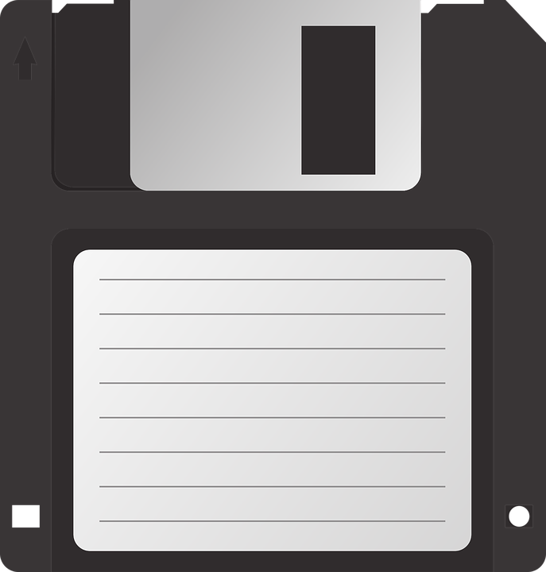

Een schrift is een systeem om taal grafisch weer te geven. Je kan boodschappen doorgeven en over een bepaalde afstand vervoeren. Het is een belangrijke bron voor de geschiedenis en volkeren. Schrijven is een manier om taal te gebruiken. Het huidig meest gebruikte schrift is van de chinezen.
Lees meer...3500 v.c
Drukpers
1350
Een drukpers is een werktuig dat gebruikt werd om teksten of afbeeldingen in lagen te vermenigvuldigen. De oudste drukpersen maakten afbeeldingen voor speelkaarten. Het oudste type drukpers in Europa is de degelpers. Deze bestaat uit een stellage van een onderplaat waar de drukvorm op ligt en een bovenplaat (degel). De drukvorm wordt met de hand ingeïnkt. Vervolgens wordt er een vel papier op de drukvorm gelegd.
Lees meer...De krant
1752
Al in de oudheid kenden verscheidene beschavingen een vorm van nieuwsverspreiding. Het middel werd en wordt vooral gebruikt als propaganda. Naast dat de functionaliteit van een krant dient als het verspreiden van nieuws voor bedrijven, wordt het ook gebruikt om de lezer te amuseren.
Lees meer...
QWERTY
1873
Dit is het standaard toetsenbordmodel zoals we die in het heden kennen. Het is afkomstig van het Latijnse schrift dat in de prehistorie is uitgevonden. Het is uitgevonden, omdat het voormalige toetsenbord (in alfabetische volgorde) problemen opleverden, omdat enkele veel gebruikte tekens vlak naast elkaar kwamen te liggen.
Lees meer...

Diskette
1967
Een diskette of floppy(disk) is een opslagmedium dat gebruikt wordt in een computer. De diskette werd eind jaren zestig door IBM ontwikkeld in een 8 inchversie. Na de opkomst van de pc in de jaren tachtig was het medium alomtegenwoordig voor gegevenstransport tussen verschillende computers, als extern geheugen of back-up. De laatste floppydisks werden in 2011 door Sony geproduceerd.
Lees meer...World Wide Web
1989
Het wereldwijde web (www), ook wel met de Engelse term "world wide web" aangeduid, maar meestal kortweg het web, houdt in: een aantal technische afspraken voor het wereldwijd over het internet aanbieden en verbinden van allerhande documenten en computertoepassingen; de verzameling documenten en toepassingen die wereldwijd volgens dit systeem over het internet worden aangeboden.
Lees meer...
Cascading Style Sheets
1994
Cascading Style Sheets (afgekort tot CSS), stijlbladen, zijn een mogelijkheid om de vormgeving van webpagina's los te koppelen van hun feitelijke inhoud en centraal vast te leggen. Het Engelse "style" heeft de betekenis van "opmaak", niet van schrijfstijl. Het begrip "cascading" (als een waterval) verwijst naar de mogelijkheid van het overerven van opmaak-eigenschappen.
Lees meer...
HyperText Markup Language
1997
HyperText Markup Language (afgekort HTML) is een op SGML gebaseerde opmaaktaal voor de specificatie van documenten, voornamelijk bedoeld voor het wereldwijde web. Het is de standaard opmaaktaal voor webpagina's. Documenten in HTML kunnen geopend en gelezen worden door een webbrowser om vervolgens als webpagina weergegeven te worden.
Lees meer...